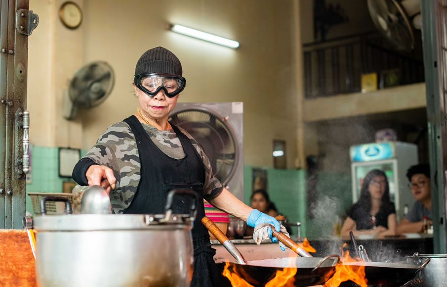
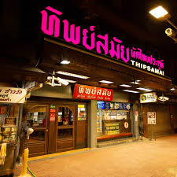
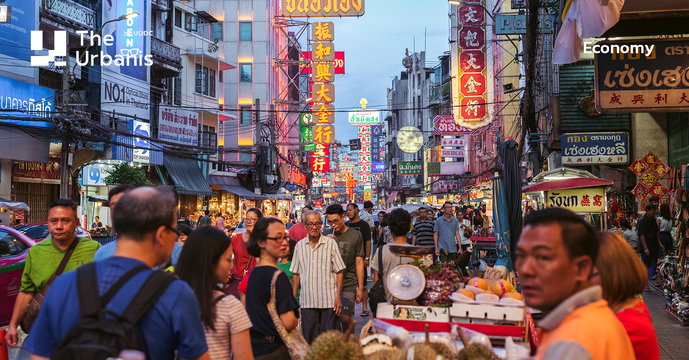
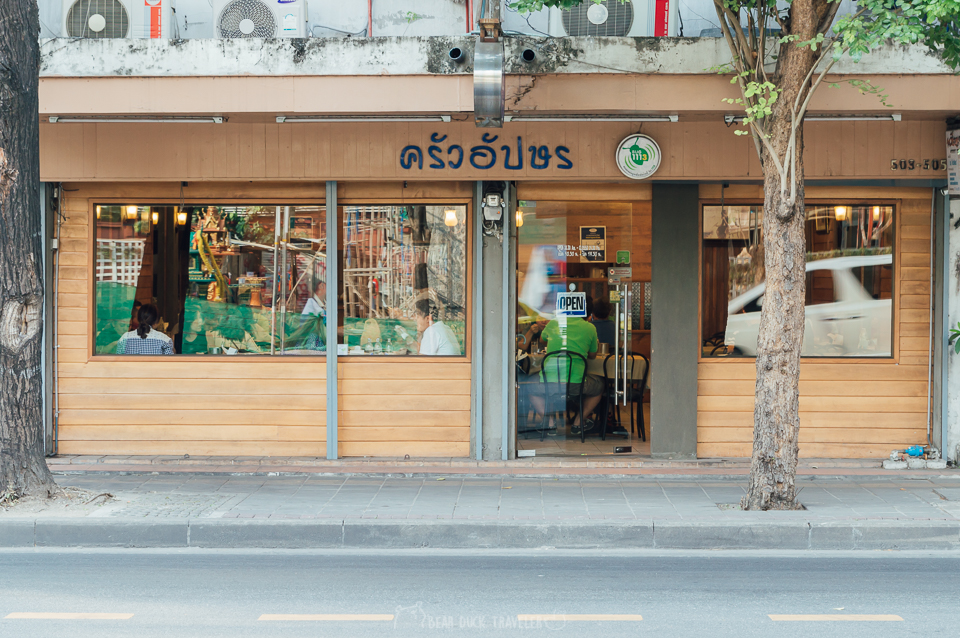

ร้านอาหารพื้นเมืองกรุงเทพมหานคร

เจ๊ไฝ ประตูผี
อาหารไทยดั้งเดิมระดับตำนาน เมนูแนะนำ: ไข่เจียวปู ผัดขี้เมาทะเล ต้มยำ

ทิพย์สมัย ผัดไทยประตูผี
ผัดไทยสูตรโบราณของกรุงเทพ เมนูเด่น: ผัดไทยมันกุ้ง ผัดไทยเส้นจันท์

สตรีทฟู้ดเยาวราช
แหล่งอาหารพื้นเมืองและจีนไทย เมนูขึ้นชื่อ: ก๋วยจั๊บ หอยทอด เป็ดย่าง

ครัวอัปษร
อาหารไทยตำรับชาววัง เมนูแนะนำ: แกงส้มชะอมไข่ ผัดไทยโบราณ